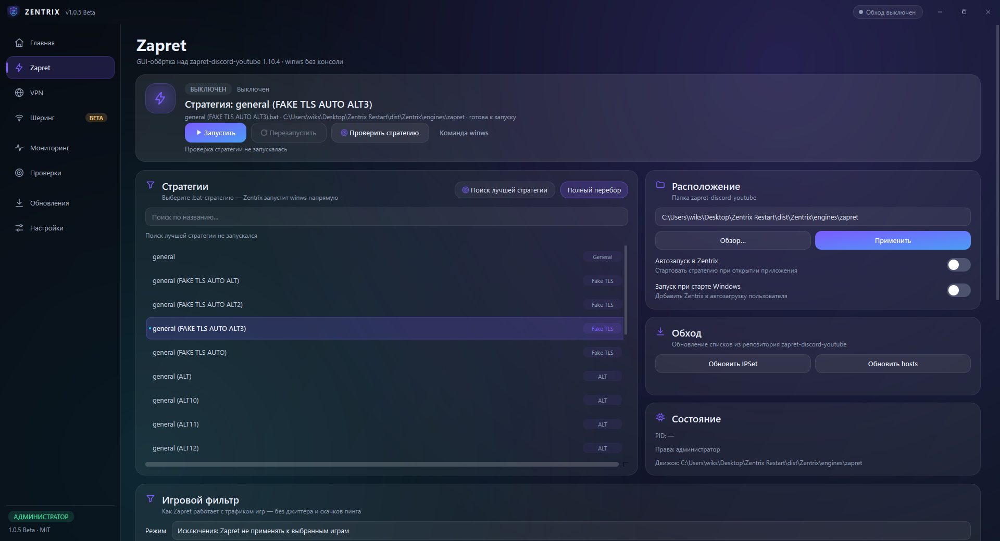
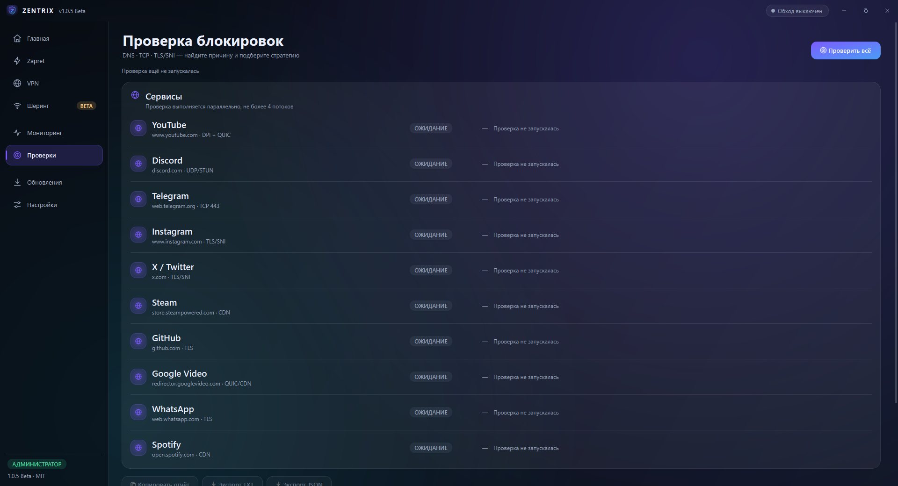
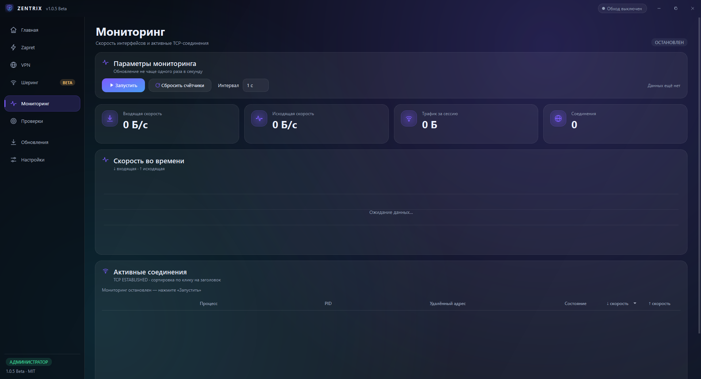
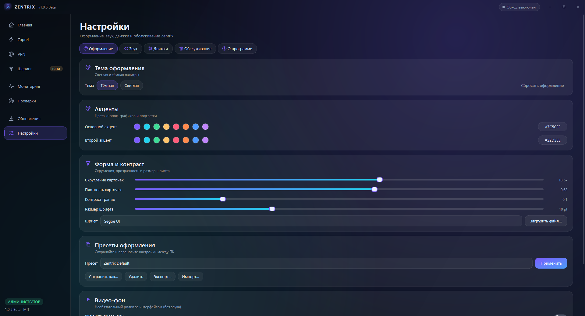

Один клик.
Никаких консолей.
Zentrix собирает Zapret и VPN на Xray или sing-box в одно аккуратное окно Windows.
Запускает стратегии обхода напрямую через winws.exe —
без cmd.exe, без мигающих чёрных окон и без россыпи
.bat-файлов на рабочем столе.
Главная
Zapret и VPN-подключения — под одним стеклом
под контролем
Zapret выключен · выбрана стратегия general (FAKE TLS AUTO ALT3).bat
⚡ Zapret ВЫКЛЮЧЕН
DPI-обход через winws
› Управление🌐 VPN ВЫКЛЮЧЕН
Общие профили · Xray / sing-box
› Управление📶 Шеринг ВЫКЛЮЧЕНО
Подключение устройств в LAN · BETA
› Управление◎ Проверка сервисов
Проверка ещё не запускалась. Нажмите «Проверить сейчас».
Проверить сейчас⚡ Быстрые действия
Zapret
GUI-обёртка над zapret-discord-youtube 1.10.4 · winws без консолей
Движок не запущен
▽ Стратегии ◎ Поиск лучшей стратегии Полный перебор
📁 Расположение
↓ Обход
Обновление списков из репозитория zapret-discord-youtube
☼ Состояние
PID: —
Права: администратор
Движок: C:\…\engines\zapret
▽ Игровой фильтр 2 игры
Режим исключений: Zapret не применяется к выбранным играм — Zapret работает на весь ПК, но останавливается на время матча. Чистый пинг как по LAN.
VPN
Один список серверов для Xray и sing-box
Ваш IP-адрес IP / GEOIP
Адреса и геолокация скрыты на сайте — данные видны только вам в приложении.
Движок и режим
Прокси-шеринг
Подключите устройства домашней сети к интернету через этот ПК
Локальный шеринг РАБОТАЕТ
Через что идёт трафик устройств:
QR-код подключения
socks5://ххх.ххх.ххх.ххх:10808
Как подключить
Wi-Fi устройства → прокси вручную →
IP компьютера: ххх.ххх.ххх.ххх
Порт: 10808
Мониторинг
Скорость интерфейсов и активные TCP-соединения
Активные соединения
Мониторинг остановлен — нажмите «Запустить». Адреса соединений скрыты на сайте.
Проверка блокировок
Что работает, что заблокировано и чем именно
Диагностика сервисов 3 из 9 доступно
Обновления
Проверка релизов через GitHub API
Компоненты
Настройки
Оформление, звук, движки и обслуживание Zentrix
Тема оформления Светлая и тёмная палитры
Акценты
Поведение
Звук
Синтезируются на лету, без файлов
Всё нужное — в одном окне
Zentrix — оболочка, а не «ещё одна программа на замену». Он управляет Zapret и два VPN-ядра из единого интерфейса с общим списком серверов.
Z Zapret
Автоматически находит стратегии в .bat, разворачивает
переменные и запускает bin\winws.exe без cmd.exe.
22 стратегии, портовый фильтр TCP/UDP, свои списки доменов и живой лог.
V VPN · Xray и sing-box
Вставьте vless://, vmess://, trojan://
или ss:// — Zentrix разберёт ссылку, сгенерирует конфиг
и поднимет локальный прокси. Оба ядра используют общий список серверов.
⇄ Мульти-прокси и шеринг · BETA
sing-box распределяет новые TCP-подключения между максимум пятью серверами. Активный VPN можно раздать устройствам той же локальной сети по HTTP или SOCKS5.
◎ IP и геолокация
На вкладке VPN отображаются прямой IP и адрес через туннель, страна и город. Для приблизительного местоположения используется ipapi.co.
↯ Проверка блокировок
DNS против DoH, TCP-доступность и классификация TLS SNI для YouTube, Discord, Telegram, Steam и других сервисов. Понятный отчёт: что работает, что заблокировано и чем.
⌁ Мониторинг сети
Скорость, графики, активные TCP-соединения и процессы, которые держат сеть. Мониторинг не работает в фоне — только когда вы на странице.
↓ Обновления
Проверка релизов Zapret, Xray, sing-box и самого Zentrix через GitHub API.
Обновление Zapret сохраняет ваши lists/ и игровой фильтр.
◐ Внешний вид
Тёмная и светлая темы, акценты, скругления, 35 векторных иконок, кастомный заголовок окна и звуки, синтезируемые на лету.
Как это выглядит
Нативный интерфейс Windows: без Electron, без веб-вьюх и без консолей на фоне.




Скачать Zentrix
Windows 10 / 11, 64-bit. Права администратора нужны только движку Zapret (WinDivert).
Рекомендуется установщик: он создаёт ярлык, регистрирует удаление и
кладёт приложение в %LOCALAPPDATA%\Programs\Zentrix.
Портативная сборка не требует установки — распакуйте и запускайте.
Ядра Xray и sing-box докачиваются при первом запуске соответствующего движка. Zapret уже входит в комплект.
Выгрузка файлов идёт с GitHub Releases.
Спасибо авторам Zapret
Zentrix не придумывает обход блокировок — он делает удобным то, что уже создали замечательные open-source разработчики. Вся заслуга в технике принадлежит им.
@ bol-van
Автор оригинального zapret — инструмента для обхода DPI через
перехват пакетов (WinDivert на Windows).
github.com/bol-van
·
zapret
@ Flowseal
Автор сборки zapret-discord-youtube — готовые стратегии
.bat, списки доменов и удобная настройка под Discord и YouTube.
Именно эта сборка встроена в Zentrix как движок Zapret.
github.com/Flowseal
·
zapret-discord-youtube